Berisp-like: a trophic model of contamination
zoo_Berisp_full.Rmd
library(spacemodR)
library(rstan)
library(ggplot2)
library(scales)
library(stringr)
library(dplyr)
library(tidyr)
library(terra)
library(purrr)Trophic web
Often, in other notebooks, we started by defining the habitats. But in this case, let’s begin by defining the species and their trophic relationships.
The goal is to reproduce the results of the Berisp model by using the same species. Here are the species we want to model:
- The soil category: although not a species, we need this layer to account for areas with and without soil. This allows us to isolate the kriging process used to estimate contamination, which we will address later. Note that we could also define layers for pH and Organic Matter (%OM), which are sometimes included in transfer equations.
Next, the organisms directly linked to the soil:
- Plants (aka plant): let’s include all plants (trees, grasses, cereal crops, and shrubs). We could break down this stratum further, but let’s keep it simple.
- Earthworms (aka earthworm: we will use this single category to represent soil invertebrates.
- Ground beetles, (aka beetle): a highly species-rich family present everywhere. They are strongly influenced by soil conditions and occasionally prey on earthworms.
Mammals. We are only considering small mammals:
- Bank vole (Myodes glareolus, aka myodes): a strictly herbivorous rodent that prefers wooded habitats.
- Common vole (Microtus arvalis, aka microtus): a highly herbivorous rodent that primarily inhabits meadows.
- Wood mouse (Apodemus sylvaticus, aka apodemus): a rodent with a more diverse diet than the previous two.
- Shrew (aka shrew, Soricidae: Sorex araneus and the greater white-toothed shrew, Crocidura russula): classified as insectivores, they feed on ground beetles, but also consume earthworms and slugs.
Finally, 3 bird species (Note: le texte original disait “2” mais en liste 3):
- Pigeon/Dove (aka columba): not included in Berisp, but useful as a common herbivore/granivore; it is widely used in Eco-SSL and various exposure models.
- Blackbird (Turdus merula, aka turdus): an omnivore that feeds on insects, earthworms, very small animals, and seeds.
- Little owl (Athene noctua, aka athene): feeds heavily on insects, earthworms, and small mammals. This will be the apex predator of our food web.
Plants and Beetles
So, let’s start creating the food web.
For plants and earthworm, 100% of the feeding behavior is based on soil. We keep thing simples, so we do not make any assumption on other sources of contaminantion, and we could eventually modulate the intake rate with the flux equatiosn comming after.
For ground beetles (Carabidae), according to recent literature (@sacco2024carabs and @deroulers2019carabs), ground beetles display a highly opportunistic and plastic diet, adapting their food intake based on environmental availability. While they are major predators of soil invertebrates like earthworms, they also exhibit a feeding continuum that includes a significant intake of weed seeds and plant material, particularly within specific tribes. To maintain simplicity within our food web model, we will bypass these highly dynamic seasonal shifts and assume a fixed dietary composition for the ground beetles consisting of 10% soil particles (accounting for incidental ingestion during foraging), 45% vegetation, and 45% earthworms.
trophic_df_init <- trophic() |>
add_link("soil", "plant", 1) |>
add_link("soil", "earthworm", 1)
# beetle and beetles
trophic_df <- trophic_df_init |>
add_link("soil", "beetle", 0.1) |>
add_link("plant", "beetle", 0.45) |>
add_link("earthworm", "beetle", 0.45)
plot(trophic_df_init, colors = species_colors)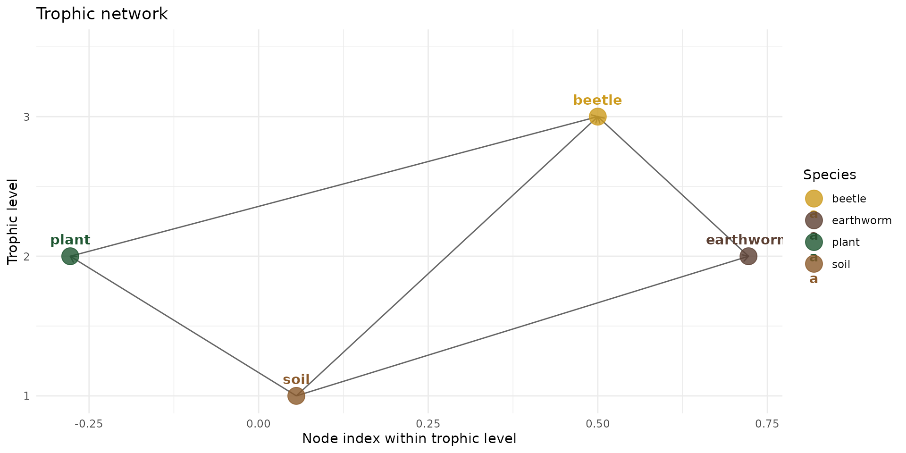
Diet of mammals and birds: the EltonTraits 1.0 database
Before going any further, we have two datasets from the EltonTraits 1.0 database, one for birds (9,994 species) and one for mammals (5,401 species), which will help us refine these dietary profiles. That is what we will explore here.
data("DBFunc_MamFuncDat")
data("DBFunc_BirdFuncDat")
head(DBFunc_MamFuncDat)
#> MSW3_ID Scientific MSWFamilyLatin Diet.Inv Diet.Vend
#> 1 1 Tachyglossus aculeatus Tachyglossidae 100 0
#> 2 2 Zaglossus attenboroughi Tachyglossidae 100 0
#> 3 3 Zaglossus bartoni Tachyglossidae 100 0
#> 4 4 Zaglossus bruijni Tachyglossidae 100 0
#> 5 5 Ornithorhynchus anatinus Ornithorhynchidae 80 0
#> 6 6 Caluromys philander Didelphidae 20 0
#> Diet.Vect Diet.Vfish Diet.Vunk Diet.Scav Diet.Fruit Diet.Nect Diet.Seed
#> 1 0 0 0 0 0 0 0
#> 2 0 0 0 0 0 0 0
#> 3 0 0 0 0 0 0 0
#> 4 0 0 0 0 0 0 0
#> 5 0 20 0 0 0 0 0
#> 6 0 0 10 0 20 0 10
#> Diet.PlantO Diet.Source Diet.Certainty ForStrat.Value ForStrat.Certainty
#> 1 0 Ref_1 ABC G A
#> 2 0 Ref_65 ABC G A
#> 3 0 Ref_2 D1 G A
#> 4 0 Ref_1 ABC G A
#> 5 0 Ref_1 ABC G A
#> 6 40 Ref_1 ABC Ar A
#> ForStrat.Comment Activity.Nocturnal Activity.Crepuscular Activity.Diurnal
#> 1 1 1 0
#> 2 1 0 0
#> 3 1 0 0
#> 4 1 0 0
#> 5 1 1 1
#> 6 1 1 0
#> Activity.Source Activity.Certainty BodyMass.Value BodyMass.Source
#> 1 Ref_1 ABC 3025.00 Ref_117
#> 2 Ref_1 ABC 8532.39 Ref_2, Ref_3
#> 3 Ref_1 ABC 7180.00 Ref_131
#> 4 Ref_1 ABC 10139.50 Ref_117
#> 5 Ref_1 ABC 1484.25 Ref_117
#> 6 Ref_1 ABC 229.25 Ref_117
#> BodyMass.SpecLevel
#> 1 1
#> 2 0
#> 3 1
#> 4 1
#> 5 1
#> 6 1Concise Diet Descriptions (EltonTraits 1.0):
-
Diet.PlantO: % of other vegetative tissues (leaves, stems, roots, bark). -
Diet.Fruit: % of fruits and berries consumed. -
Diet.Seed: % of seeds, nuts, grains, or cones. -
Diet.Nect: % of nectar, pollen, or plant exudates. -
Diet.Inv: % of invertebrates (insects, larves, worms, mollusks). -
Diet.Vfish: % of fish consumed. -
Diet.Vect: % of ectothermic vertebrates (reptiles and amphibians). -
Diet.Vend: % of endothermic vertebrates (birds and mammals). -
Diet.Scav: % of scavenging activity (eating carrion/dead animals). -
Diet.Vunk: % of unknown or unclassified vertebrates.
And also:
-
Diet.Source: Reference/ID of the scientific data source. -
Diet.Certainty: Data certainty score (direct species study vs. genus-level extrapolation).
Small mammals: voles and shrew
diet_mammal <- DBFunc_MamFuncDat |>
dplyr::filter(
Scientific %in%
c("Microtus arvalis", "Myodes glareolus", "Apodemus sylvaticus", "Sorex araneus", "Crocidura russula")
)
# transform data_set
species_short = c(
"Microtus arvalis"="microtus",
"Myodes glareolus"="myodes",
"Apodemus sylvaticus"="apodemus",
"Sorex araneus"="sorex",
"Crocidura russula"="crocidura")
diet_long <- diet_mammal |>
pivot_longer(
cols = c(Diet.Inv, Diet.Vend, Diet.Vect, Diet.Vfish, Diet.Vunk,
Diet.Scav, Diet.Fruit, Diet.Nect, Diet.Seed, Diet.PlantO),
names_to = "Diet_Category",
values_to = "Value"
) |>
mutate(
Diet_Category = stringr::str_remove(Diet_Category, "Diet\\."),
Diet_Category = factor(Diet_Category, levels = trophic_order),
Species_Short = species_short[Scientific]
)
# create plot
ggplot(diet_long, aes(x = Diet_Category, y = Value, color = Species_Short, shape=Scientific)) +
geom_point(size = 3, alpha = 0.8, position = position_jitter(width = 0.15, height = 0)) +
theme_minimal(base_size = 14) +
scale_color_manual(values = species_colors) +
labs(
title = "Dietary composition of some small-mammals species",
x = "Diet Category",
y = "Percentage / Value",
color = "Species"
) +
theme(
axis.text.x = element_text(angle = 45, hjust = 1),
panel.grid.minor = element_blank(),
)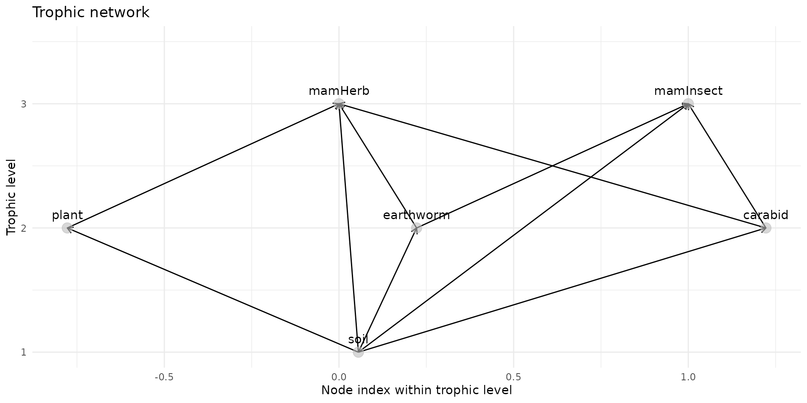
We can compared the results with what is used in the Berisp documentation, and see that the results are similar:
| grass | herbs | berries | seeds | earthworm | beetle | soil | |
|---|---|---|---|---|---|---|---|
| bank vole (Myodes glareolus) | 20 | 20 | 26 | 24 | 4 | 4 | 2 |
| common vole (Microtus arvalis) | 42 | 41 | 15 | 2 | |||
| wood mouse (Apodemus sylvaticus) | 6 | 6 | 12 | 58 | 8 | 8 | 2 |
| shrew (Sorex araneus or Crocidura russula) | 49 | 49 | 2 |
So we add mammals to the trophic network
trophic_df <- trophic_df |>
# myodes
add_link("soil", "myodes", 0.02) |>
add_link("plant", "myodes", 0.9) |>
add_link("earthworm", "myodes", 0.04) |>
add_link("beetle", "myodes", 0.04) |>
# microtus
add_link("soil", "microtus", 0.02) |>
add_link("plant", "microtus", 0.98) |>
# wood mouse
add_link("soil", "apodemus", 0.02) |>
add_link("plant", "apodemus", 0.82) |>
add_link("earthworm", "apodemus", 0.08) |>
add_link("beetle", "apodemus", 0.08) |>
# sorex
add_link("soil", "sorex", 0.02) |>
add_link("earthworm", "sorex", 0.49) |>
add_link("beetle", "sorex", 0.49) |>
# crocidura
add_link("soil", "crocidura", 0.02) |>
add_link("earthworm", "crocidura", 0.49) |>
add_link("beetle", "crocidura", 0.49)
plot(trophic_df, colors = species_colors)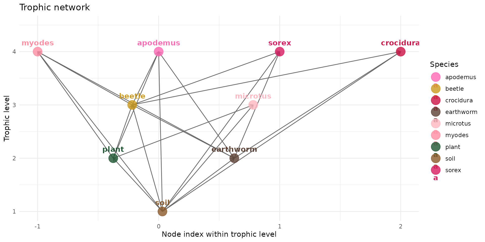
Birds: little owl and black bird
diet_bird <- DBFunc_BirdFuncDat |>
dplyr::filter(
Scientific %in%
c("Athene noctua", "Turdus merula", "Columba palumbus")
)
# transform data_set
species_short = c(
"Columba palumbus"="columba",
"Athene noctua"="athene",
"Turdus merula"="turdus")
diet_long <- diet_bird |>
pivot_longer(
cols = c(Diet.Inv, Diet.Vend, Diet.Vect, Diet.Vfish, Diet.Vunk,
Diet.Scav, Diet.Fruit, Diet.Nect, Diet.Seed, Diet.PlantO),
names_to = "Diet_Category",
values_to = "Value"
) |>
mutate(
Diet_Category = stringr::str_remove(Diet_Category, "Diet\\."),
Diet_Category = factor(Diet_Category, levels = trophic_order),
Species_Short = species_short[Scientific]
)
# create plot
ggplot(diet_long, aes(x = Diet_Category, y = Value, color = Species_Short, shape=Scientific)) +
geom_point(size = 3, alpha = 0.6, position = position_jitter(width = 0.15, height = 0)) +
theme_minimal(base_size = 14) +
scale_color_manual(values = species_colors) +
labs(
title = "Dietary composition of some small-mammals species",
x = "Diet Category",
y = "Percentage / Value",
color = "Species"
) +
theme(
axis.text.x = element_text(angle = 45, hjust = 1),
panel.grid.minor = element_blank(),
)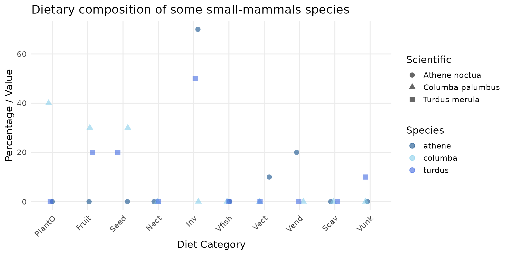
From this graph, we observe the following:
- Columba palumbus is strictly herbivorous/granivorous, consisting of 40% plants, 30% fruits, and 30% seeds.
- Turdus merula is more of an omnivore, with 20% fruits, 20% seeds, and 50% invertebrates (which we will divide equally between earthworms and beetles). The remaining 10% consists of unknown vertebrates (likely because they are not consumed whole), which we will not take into account.
- Athene noctua feeds on 70% invertebrates (which we will split into 35% earthworms and 35% beetles), 20% endotherms, and 10% ectotherms (we will distribute this combined 30% across all organisms).
And we finally add birds to the trophic network:
trophic_df <- trophic_df |>
# columba
add_link("plant", "columba", 1) |>
# turdus
add_link("plant", "turdus", 0.4) |>
add_link("earthworm", "turdus", 0.3) |>
add_link("beetle", "turdus", 0.3) |>
# athene
add_link("earthworm", "athene", 0.35) |>
add_link("beetle", "athene", 0.35) |>
add_link("myodes", "athene", 0.06) |>
add_link("microtus", "athene", 0.06) |>
add_link("apodemus", "athene", 0.06) |>
add_link("sorex", "athene", 0.06) |>
add_link("crocidura", "athene", 0.06)
plot(trophic_df, colors = species_colors, edge_width="norm_target")
Food Ingestion Rate per Body Weight
We have the energy needs of 749 species, 97 mammals, 107 birds, 170 fishes, 51 reptiles, 11 amphibians, 110 crustacean, 65 arthropods, 75 protozoa
data("FmrBT")close species
The list is missing some species.
Sorex and Crocidura (Shrews): the list lacks true shrews (Soricidae). When seeking a metabolic surrogate for temperate shrews (Sorex spp.) within this dataset, small temperate insectivorous bats, such as Myotis lucifugus and Plecotus auritus, serve as excellent physiological equivalents. Like true shrews, these bats are lightweight (often weighing between 5 and 12 grams) and operate under immense thermal pressure from temperate and boreal climates. Because they are strictly insectivorous, they share a highly active foraging strategy that demands a continuous supply of high-protein, easily digestible prey. Most importantly, the extreme energetic cost of flapping flight combined with their tiny body size forces these bats to run a hyper-metabolic “engine.”
Myodes glareolus (Bank Vole): the list is highly enriched with rodents that are phylogenetically very close to the bank vole. Most notably, Cleithrionomys rutilus belongs to the exact same genus (as Myodes and Cleithrionomys are synonymous in modern taxonomy). Additionally, species from the genera Microtus (like M. agrestis and M. pennsylvanicus) and Arvicola belong to the same family, Cricetidae, sharing identical microtine (vole-like) metabolic and toxicokinetic traits.
energy_mammal <- FmrBT |>
filter(
SpeciesVerbatim %in% c(
"Apodemus sylvaticus", "Plecotus auritus", "Myotis lucifugus",
"Cleithrionomys rutilus",
"Microtus agrestis", "Microtus pennsylvanicus")
)
# plot
ggplot(data = energy_mammal, aes(x = Mass_g, y = FMR_kJ_d/Mass_g, color = SpeciesVerbatim)) +
geom_point(size = 3.5, alpha = 0.8) +
labs(
title = "Field Metabolic Rate (FMR) vs. Body Mass in Small Mammals",
x = "Body Mass (g)",
y = "Field Metabolic Rate (kJ/day/g)",
color = "Species"
) +
theme_minimal() +
theme(
plot.title = element_text(face = "bold", size = 14, hjust = 0.5),
legend.title = element_text(face = "bold"),
legend.position = "right"
)
- Athene noctua (Little Owl): true owls (Strigiformes) are completely absent from this dataset. The closest relative available is Phalaenoptilus nuttallii (the common poorwill), which belongs to the Caprimulgiformes (nightjars). While it is a distinct family, nightjars share a nocturnal, insectivorous niche with small owls and belong to the same broader evolutionary landbird/Strisores lineage, making it the best available surrogate for nocturnal avian traits.
energy_mammal <- FmrBT |>
filter(SpeciesVerbatim %in% c(
"Turdus merula", "Phalaenoptilus nuttallii")
)
# plot
ggplot(data = energy_mammal, aes(x = Mass_g, y = FMR_kJ_d/Mass_g, color = SpeciesVerbatim)) +
geom_point(size = 3.5, alpha = 0.8) +
labs(
title = "Field Metabolic Rate (FMR) vs. Body Mass in Small Mammals",
x = "Body Mass (g)",
y = "Field Metabolic Rate (kJ/day/g)",
color = "Species"
) +
theme_minimal() +
theme(
plot.title = element_text(face = "bold", size = 14, hjust = 0.5),
legend.title = element_text(face = "bold"),
legend.position = "right"
)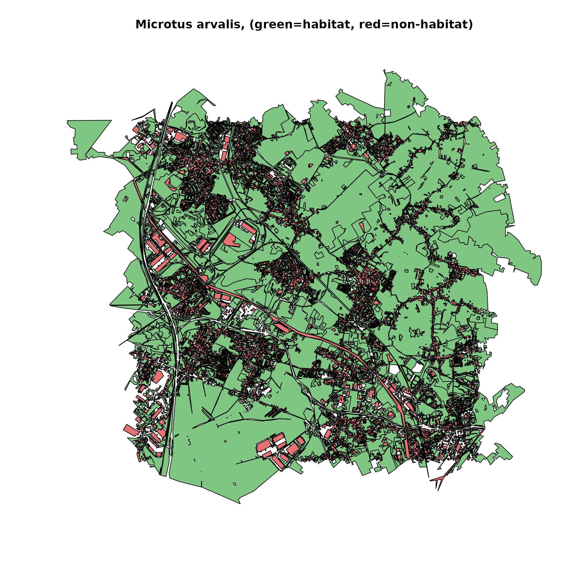
FIR weighted
# --- INSECTES ---
bw_beetle = 55 * 10**-3 # 55 mg see Zygmunt et al. 2006: Body mass and caloric value of the ground beetle (Pterostichus oblongopunctatus) (Coleoptera, Carabidae) along a gradient of heavy metal pollution
FIRbw_beetle = 0.51 # Pocock et al. 2020 : Body mass and caloric value of the ground beetle (Pterostichus oblongopunctatus) (Coleoptera, Carabidae) along a gradient of heavy metal pollution
FIR_beetle = FIRbw_beetle * bw_beetle
# --- MAMMIFÈRES ---
bw_myodes = 20 # à vérifier
FIRbw_myodes = 0.3 # à vérifier
FIR_myodes = FIRbw_myodes * bw_myodes
bw_microtus = 25 # à vérifier
FIRbw_microtus = 0.45 # à vérifier
FIR_microtus = FIRbw_microtus * bw_microtus
bw_apodemus = 21.7 # g POLARIS
FIRbw_apodemus = 0.206 # g/d/g POLARIS
FIR_apodemus = FIRbw_apodemus * bw_apodemus
bw_sorex = 9.7 # g POLARIS
FIRbw_sorex = 13.3 # g/d/g POLARIS
FIR_sorex = FIRbw_sorex * bw_sorex
bw_crocidura = 11.6 # à vérifier
FIRbw_crocidura = 13.3 # POLARIS sur Sorex
FIR_crocidura = FIRbw_crocidura * bw_crocidura
# --- OISEAUX ---
bw_columba = 490 # POLARIS - Tier 2
FIRbw_columba = 0.074 # POLARIS - Tier 2
FIR_columba = FIRbw_columba * bw_columba
bw_turdus = 113
DEE_turdus = 263 # kJ/d - POLARIS
FIRbw_turdus = 0.5 # POLARIS - Tier 2, between 0.185 (seeds) and 1.01 (slugs)
FIR_turdus = FIRbw_turdus * bw_turdus
bw_athene = 180 # à vérifier
FIRbw_athene = 0.30 # à vérifier
FIR_athene = FIRbw_athene * bw_athene
trophic_df_FIR <- trophic_df_init |>
add_link("soil", "beetle", 0.1 * FIR_beetle) |>
add_link("plant", "beetle", 0.45 * FIR_beetle) |>
add_link("earthworm", "beetle", 0.45 * FIR_beetle ) |>
# myodes
add_link("soil", "myodes", 0.02 * FIR_myodes) |>
add_link("plant", "myodes", 0.9 * FIR_myodes) |>
add_link("earthworm", "myodes", 0.04 * FIR_myodes) |>
add_link("beetle", "myodes", 0.04 * FIR_myodes) |>
# microtus
add_link("soil", "microtus", 0.02 * FIR_microtus) |>
add_link("plant", "microtus", 0.98* FIR_microtus) |>
# wood mouse
add_link("soil", "apodemus", 0.02 * FIR_apodemus) |>
add_link("plant", "apodemus", 0.82 * FIR_apodemus) |>
add_link("earthworm", "apodemus", 0.08 * FIR_apodemus) |>
add_link("beetle", "apodemus", 0.08 * FIR_apodemus) |>
# sorex
add_link("soil", "sorex", 0.02 * FIR_sorex) |>
add_link("earthworm", "sorex", 0.49 * FIR_sorex) |>
add_link("beetle", "sorex", 0.49 * FIR_sorex) |>
# crocidura
add_link("soil", "crocidura", 0.02 * FIR_crocidura) |>
add_link("earthworm", "crocidura", 0.49 * FIR_crocidura) |>
add_link("beetle", "crocidura", 0.49 * FIR_crocidura) |>
# columba
add_link("plant", "columba", 1* FIR_columba) |>
# turdus
add_link("plant", "turdus", 0.4 * FIR_turdus) |>
add_link("earthworm", "turdus", 0.3 * FIR_turdus) |>
add_link("beetle", "turdus", 0.3 * FIR_turdus) |>
# athene
add_link("earthworm", "athene", 0.35 * FIR_athene) |>
add_link("beetle", "athene", 0.35 * FIR_athene) |>
add_link("myodes", "athene", 0.06 * FIR_athene) |>
add_link("microtus", "athene", 0.06 * FIR_athene) |>
add_link("apodemus", "athene", 0.06 * FIR_athene) |>
add_link("sorex", "athene", 0.06 * FIR_athene) |>
add_link("crocidura", "athene", 0.06 * FIR_athene)We can normalize on target (sum to 1 for each target/to
node):
plot(trophic_df_FIR, colors = species_colors, edge_width="norm_target")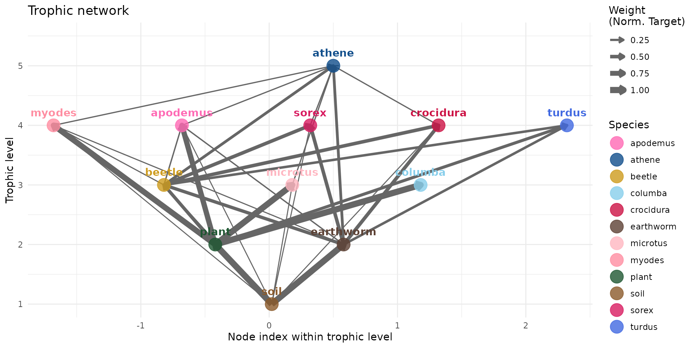
or we can normalize for the whole graph (uses the raw weights).
plot(trophic_df_FIR, colors = species_colors, edge_width="raw")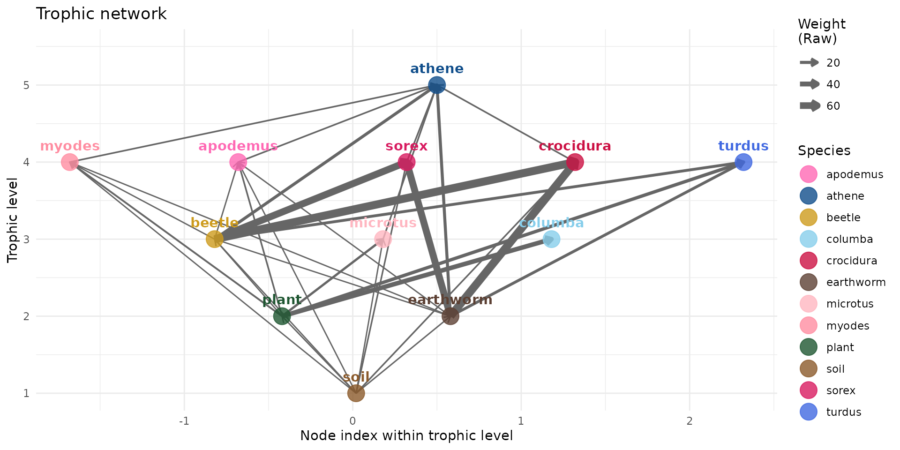
Here we have the daily food ingestion rate per body weight (FIRbw).
And we see that shrews having a high FIRbw, would as have a strong potential intake rate of the contaminant.
trophic_df_FIRbw <- trophic_df_init |>
add_link("soil", "beetle", 0.1 * FIRbw_beetle) |>
add_link("plant", "beetle", 0.45 * FIRbw_beetle) |>
add_link("earthworm", "beetle", 0.45 * FIRbw_beetle ) |>
# myodes
add_link("soil", "myodes", 0.02 * FIRbw_myodes) |>
add_link("plant", "myodes", 0.9 * FIRbw_myodes) |>
add_link("earthworm", "myodes", 0.04 * FIRbw_myodes) |>
add_link("beetle", "myodes", 0.04 * FIRbw_myodes) |>
# microtus
add_link("soil", "microtus", 0.02 * FIRbw_microtus) |>
add_link("plant", "microtus", 0.98* FIRbw_microtus) |>
# wood mouse
add_link("soil", "apodemus", 0.02 * FIRbw_apodemus) |>
add_link("plant", "apodemus", 0.82 * FIRbw_apodemus) |>
add_link("earthworm", "apodemus", 0.08 * FIRbw_apodemus) |>
add_link("beetle", "apodemus", 0.08 * FIRbw_apodemus) |>
# sorex
add_link("soil", "sorex", 0.02 * FIRbw_sorex) |>
add_link("earthworm", "sorex", 0.49 * FIRbw_sorex) |>
add_link("beetle", "sorex", 0.49 * FIRbw_sorex) |>
# crocidura
add_link("soil", "crocidura", 0.02 * FIRbw_crocidura) |>
add_link("earthworm", "crocidura", 0.49 * FIRbw_crocidura) |>
add_link("beetle", "crocidura", 0.49 * FIRbw_crocidura) |>
# columba
add_link("plant", "columba", 1* FIRbw_columba) |>
# turdus
add_link("plant", "turdus", 0.4 * FIRbw_turdus) |>
add_link("earthworm", "turdus", 0.3 * FIRbw_turdus) |>
add_link("beetle", "turdus", 0.3 * FIRbw_turdus) |>
# athene
add_link("earthworm", "athene", 0.35 * FIRbw_athene) |>
add_link("beetle", "athene", 0.35 * FIRbw_athene) |>
add_link("myodes", "athene", 0.06 * FIRbw_athene) |>
add_link("microtus", "athene", 0.06 * FIRbw_athene) |>
add_link("apodemus", "athene", 0.06 * FIRbw_athene) |>
add_link("sorex", "athene", 0.06 * FIRbw_athene) |>
add_link("crocidura", "athene", 0.06 * FIRbw_athene)
plot(trophic_df_FIRbw, colors = species_colors, edge_width="raw")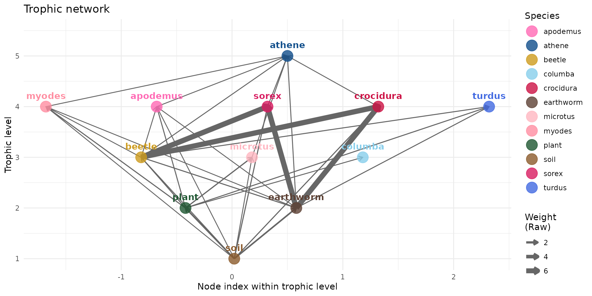
Habitat
Once again, we load data from a site in northern France.
Here, we use the provided data (ocsge_metaleurop and
roi_metaleurop) along with the ggplot2 package
for visualization.
# Load a study area (e.g., the Metaleurop site) and its land cover data
data("roi_metaleurop")
data("ocsge_metaleurop")
ggplot() +
theme_minimal() +
geom_sf(data=ocsge_metaleurop, aes(fill=code_cs), color=NA) +
geom_sf(data=roi_metaleurop, fill=NA, color="red", size=1) +
theme(legend.position = "none") +
labs(title="Land Cover in the Region of Interest (ROI)")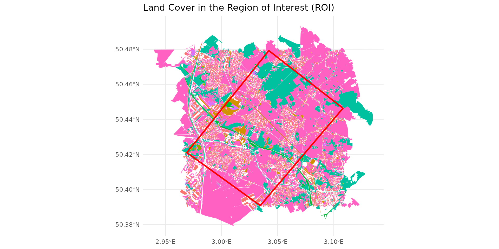
From these vector polygons, we define habitats for our species. A habitat is a combination of favorable, unfavorable, or neutral zones. These geometries are then rasterized (converted into regular grids) to prepare them for modeling.
# Habitat definition based on OSGE codes (which are in the `ocsge_metaleurop` table)
layer_soil_natural = ocsge_metaleurop$code_cs %in%
c("CS1.2.1","CS2.1.1.1","CS2.1.1.2","CS2.1.1.3", "CS2.1.2","CS2.1.3","CS2.2.1","CS2.2.3")
layer_soil_artificial = ocsge_metaleurop$code_cs %in%
c("CS1.1.1.1", "CS1.1.1.2", "CS1.1.2.1")
layer_plant = ocsge_metaleurop$code_cs %in%
c("CS2.1.1.1", "CS2.1.1.2", "CS2.1.1.3", "CS2.1.3", "CS2.2.1")
habitat_soil = habitat() |>
add_habitat(ocsge_metaleurop[layer_soil_natural,]) |>
add_nohabitat(ocsge_metaleurop[layer_soil_artificial,])
plot(habitat_soil)
habitat_plant = habitat() |>
add_habitat(ocsge_metaleurop[layer_plant,]) |>
add_nohabitat(ocsge_metaleurop[layer_soil_artificial,])We assume that earthworm and beetle have the same habitat that soil: everywhere there is soil, it is an habitat for earthworm and beetle.
habitat_earthworm = habitat_soil
habitat_beetle = habitat_soilDatabase of Habitat base on @oconnor2024habitat
In this section, for birds and mammals we use the data base we build
using LLM based on the original database created by @oconnor2024habitat where we linked species
habitat to enriched OCS-GE descriptions. Then, instead of a single
presence/absence score, the model simultaneously generates four
continuous variables (on a scale of 0 to 10) that capture finer
landscape ecology concepts: * weight_global: Overall
habitat suitability (closest to the traditional AOH score). *
weight_movement: Landscape permeability for species
dispersion. * weight_foraging: Habitat attractiveness
specifically for feeding and resource acquisition. *
resistance: The impedance or barrier effect of the
environment, heavily informed by the “avoided-habitat” descriptions.
data("ocsge_species_dict")This database includes 935 species, including 499 birds, 215 mammals, 136 reptiles, and 85 amphibians.
For example, for the common vole (Microtus arvalis):
microtus_hab <- join_ocsge_species(ocsge_metaleurop, "Microtus_arvalis")
plot_species_habitat(microtus_hab)
microtus_habitat <- habitat(microtus_hab, habitat=TRUE, weight=microtus_hab$weight_global) |>
add_nohabitat(microtus_hab[microtus_hab$resistance==10,])
plot(microtus_habitat, main="Microtus arvalis, (green=habitat, red=non-habitat)")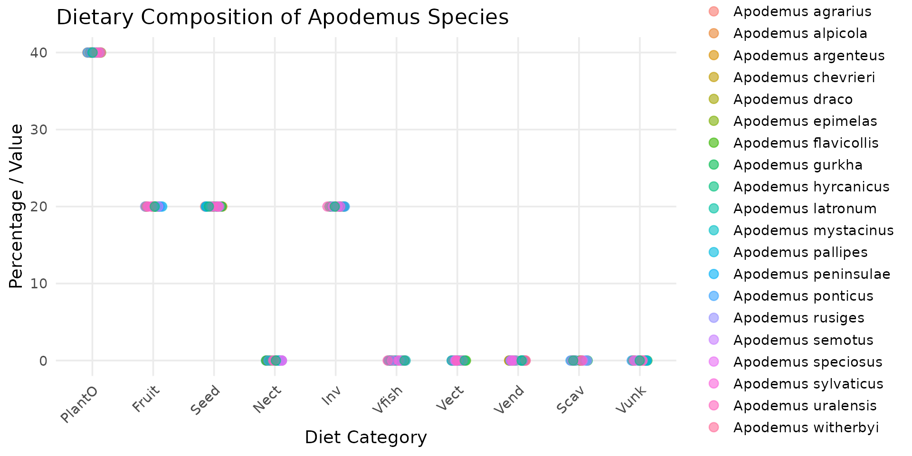
myodes_hab <- join_ocsge_species(ocsge_metaleurop, "Myodes_glareolus")
plot_species_habitat(myodes_hab)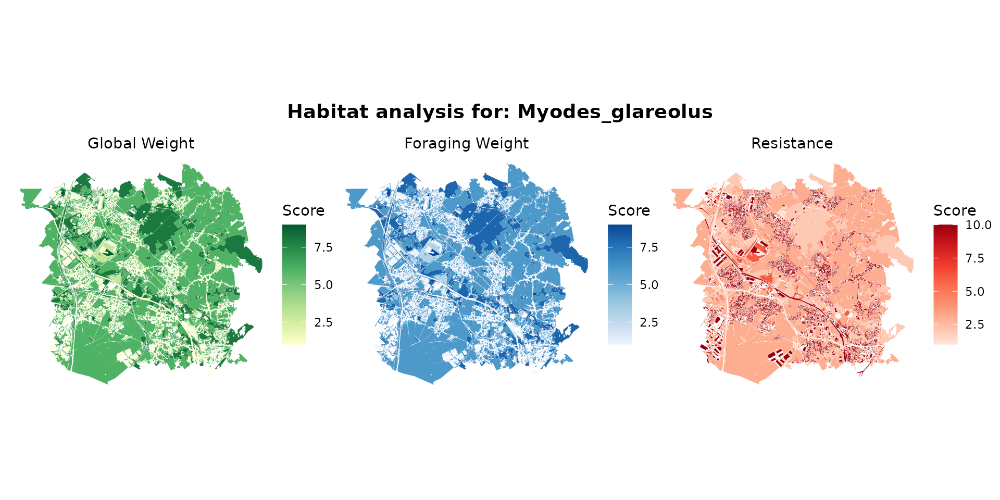
myodes_habitat <- habitat(myodes_hab, habitat=TRUE, weight=myodes_hab$weight_global) |>
add_nohabitat(myodes_hab[myodes_hab$resistance==10,])
apodemus_hab <- join_ocsge_species(ocsge_metaleurop, "Apodemus_sylvaticus")
plot_species_habitat(apodemus_hab)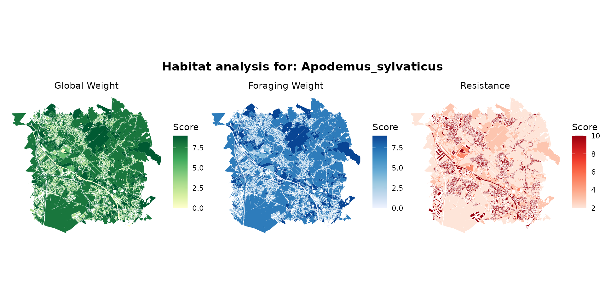
apodemus_habitat <- habitat(apodemus_hab, habitat=TRUE, weight=apodemus_hab$weight_global) |>
add_nohabitat(apodemus_hab[apodemus_hab$resistance==10,])
sorex_hab <- join_ocsge_species(ocsge_metaleurop, "Sorex_araneus")
plot_species_habitat(sorex_hab)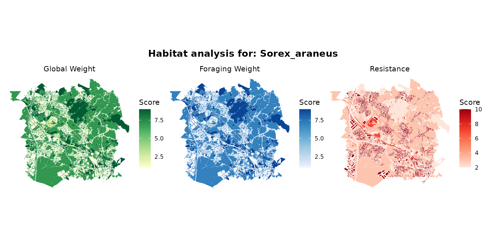
sorex_habitat <- habitat(sorex_hab, habitat=TRUE, weight=sorex_hab$weight_global) |>
add_nohabitat(sorex_hab[sorex_hab$resistance==10,])
crocidura_hab <- join_ocsge_species(ocsge_metaleurop, "Crocidura_russula")
plot_species_habitat(crocidura_hab)
crocidura_habitat <- habitat(sorex_hab, habitat=TRUE, weight=sorex_hab$weight_global) |>
add_nohabitat(sorex_hab[sorex_hab$resistance==10,])
columba_hab <- join_ocsge_species(ocsge_metaleurop, "Columba_palumbus")
plot_species_habitat(columba_hab)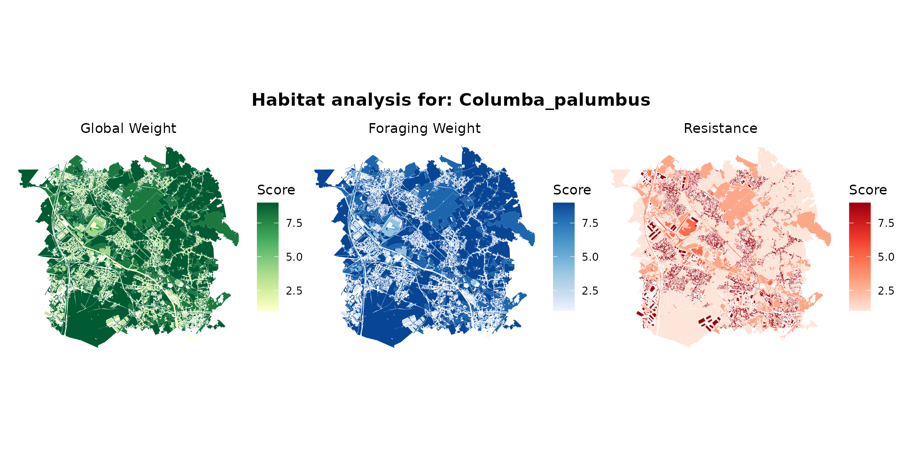
columba_habitat <- habitat(columba_hab, habitat=TRUE, weight=columba_hab$weight_global) |>
add_nohabitat(columba_hab[columba_hab$resistance==10,])
turdus_hab <- join_ocsge_species(ocsge_metaleurop, "Turdus_merula")
plot_species_habitat(turdus_hab)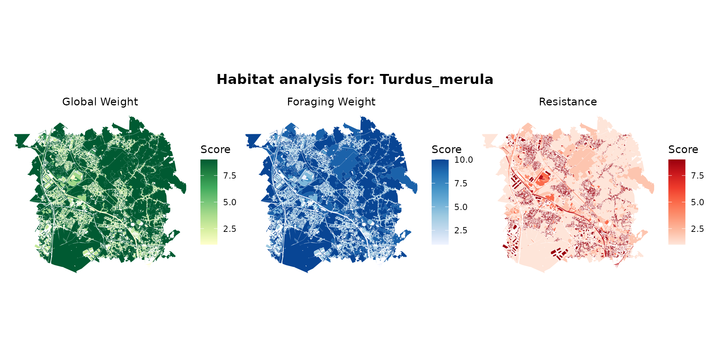
turdus_habitat <- habitat(turdus_hab, habitat=TRUE, weight=turdus_hab$weight_global) |>
add_nohabitat(turdus_hab[turdus_hab$resistance==10,])
athene_hab <- join_ocsge_species(ocsge_metaleurop, "Athene_noctua")
plot_species_habitat(athene_hab)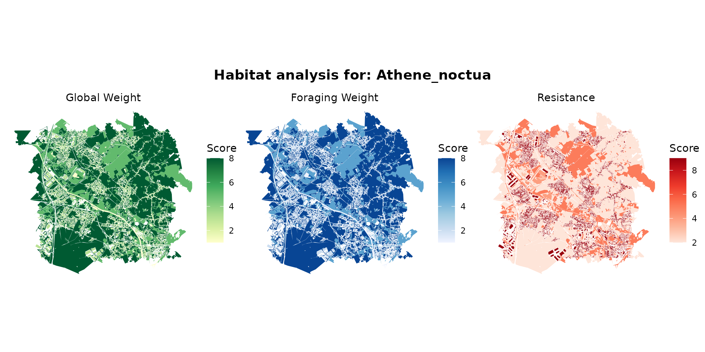
athene_habitat <- habitat(athene_hab, habitat=TRUE, weight=athene_hab$weight_global) |>
add_nohabitat(athene_hab[athene_hab$resistance==10,])Rasterize on a same grid frame
At this stage, now that the habitats are defined, we rasterize the
habitats based on a default layer, here cd_ground. This
allows us to have the same landscape grid so we can successfully overlay
all the layers.
# Loading a background concentration raster for a contaminant (Cadmium)
ground_cd <- load_raster_extdata("ground_concentration_cd_compressed.tif")
# We initialize habitat grids (rasters) for each level
rast_soil <- habitat_raster(ground_cd, habitat_soil)
rast_plant <- habitat_raster(ground_cd, habitat_plant)
rast_earthwom <- habitat_raster(ground_cd, habitat_earthworm)
rast_beetle <- habitat_raster(ground_cd, habitat_beetle)
rast_myodes <- habitat_raster(ground_cd, myodes_habitat)
rast_microtus <- habitat_raster(ground_cd, microtus_habitat)
rast_apodemus <- habitat_raster(ground_cd, apodemus_habitat)
rast_crocidura <- habitat_raster(ground_cd, crocidura_habitat)
rast_sorex <- habitat_raster(ground_cd, sorex_habitat)
rast_columba <- habitat_raster(ground_cd, columba_habitat)
rast_turdus <- habitat_raster(ground_cd, turdus_habitat)
rast_athene <- habitat_raster(ground_cd, athene_habitat)
# We create the `raster_stack` of the habitats
stack_habitat <- raster_stack(
raster_list = list(
rast_soil, rast_plant, rast_earthwom, rast_beetle,
rast_myodes, rast_microtus, rast_apodemus, rast_sorex, rast_crocidura,
rast_columba, rast_turdus, rast_athene),
names = c("soil", "plant", "earthworm", "beetle",
"myodes", "microtus", "apodemus", "sorex", "crocidura",
"columba", "turdus", "athene")
)Create the spacemodel
spcmdl_berisp_init <- spacemodel(stack_habitat, trophic_df)
plot(spcmdl_berisp_init)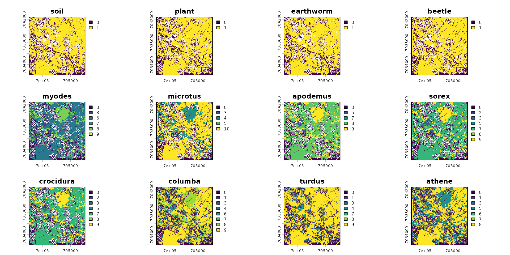
Fluxes
There are several pathways of contamination, which can be divided into two main categories:
- Direct contamination: This occurs when an organism absorbs a pollutant directly from its environment. Examples include a fish exposed to waterborne contaminants, an earthworm absorbing pollutants from the soil, or flying arthropods and birds exposed to airborne pollutants. A single organism can also have multiple direct exposure routes; for instance, benthic (sediment-dwelling) invertebrates can be contaminated by both the sediment and the overlying water. To model this, a simple equation is usually sufficient, potentially accounting for environmental properties (e.g., soil pH, organic matter, clay percentage) and species-specific traits (e.g., how a plant might modify the soil-plant interaction).
- Trophic contamination: This refers to contamination through dietary intake. To accurately model this route, it is necessary to know the organism’s diet composition (food items consumed), the biomass flux per kilogram of the individual, and the contaminant flux, which is calculated by estimating the contaminant concentration within each specific food resource.
A second challenging aspect for the model is differentiating between exposures (the doses to which organisms are exposed) and accumulated concentrations.
- For organisms undergoing direct exposure, there is no need to calculate dietary contamination fluxes. The organism is exposed to 100% of the surrounding medium—and therefore the pollution—and the direct flux equation translates this contamination straight into a body burden.
- For trophic contamination, however, it is essential to know the biomass of each specific item in the diet to determine the actual exposure (by multiplying the ingestion rates by the resource concentrations), and finally to calculate the body burdens. These steps can be broken down into separate components, but this is exactly where careful attention is required.
Fluxes: Direct contamination (soil-target transfer for plant and earthworm)
Vegetation
data("bappet_cd")
plt_bappet_cd = bappet_cd[bappet_cd$extraction=="Totale",]
fit_simple_veg_cd <- load_safe("raw_data/fit_simple_veg_cd.rds")
fit_pars <- rstan::extract(fit_simple_veg_cd, c("beta0", "beta1"))
xseq = seq(min(bappet_cd$log10_media_mean), max(bappet_cd$log10_media_mean), length.out=100)
yseq = fit_pars$beta1 %*% t(xseq) + c(fit_pars$beta0)
yseq_q = apply(yseq, 2, quantile, prob = c(0.025, 0.5, 0.975))
# Créer un data.frame pour la ligne
line_data <- data.frame(
x = xseq,
y_q50 = yseq_q[2,],
y_qinf95 = yseq_q[1,],
y_qsup95 = yseq_q[3,]
)
ggplot() +
theme_minimal() +
geom_point(data = plt_bappet_cd,
aes(x = log10_media_mean, y = log10_plant_mean, color = plant_type)) +
# geom_line(data = line_data, aes(x = x, y = y_q50), color = "blue", size=1) +
geom_abline(intercept = -0.488, slope = 0.494, color="red")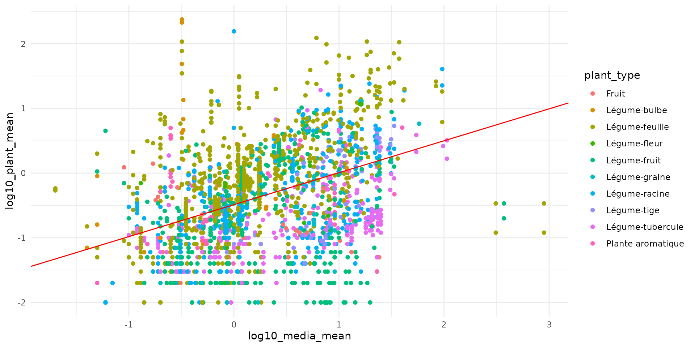
This model give the following equation:
For Cadmium, the equation is given in Berisp:
In Eco-SSL, authors use the following equation (Neperian logarithm):
Earthworm
data("earthworm_cd")
fit_simple_worm_cd <- load_safe("raw_data/fit_simple_worm_cd.rds")
fit_pars <- rstan::extract(fit_simple_worm_cd, c("beta0", "beta1"))
xseq = seq(min(earthworm_cd$log10_cd_soil), max(earthworm_cd$log10_cd_soil), length.out=100)
yseq = fit_pars$beta1 %*% t(xseq) + c(fit_pars$beta0)
yseq_q = apply(yseq, 2, quantile, prob = c(0.025, 0.5, 0.975))
# Créer un data.frame pour la ligne
line_data <- data.frame(
x = xseq,
y_q50 = yseq_q[2,],
y_qinf95 = yseq_q[1,],
y_qsup95 = yseq_q[3,]
)
ggplot() +
theme_minimal() +
geom_point(data = earthworm_cd,
aes(x = log10_cd_soil, y = log10_cd_worm)) +
# geom_line(data = line_data, aes(x = x, y = y_q50), color = "blue", size=1) +
geom_abline(intercept = 0.596, slope = 0.983, color="red")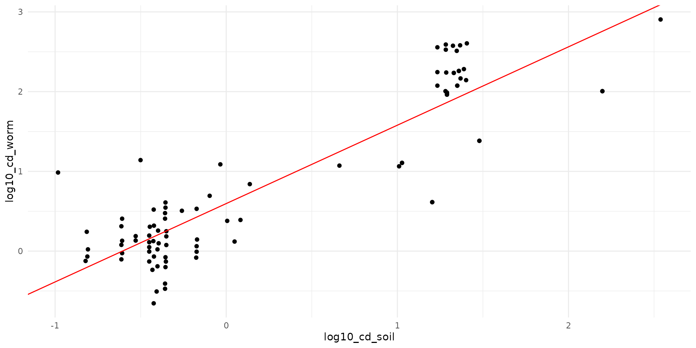
This model give the following equation:
For Cadmium, the equation is given by (Ma et al., 2004):
In Eco-SSL, the following equation is given (see Neperian logarithm):
spacemodel edit: implementing soil-vegetation and
soil-earthworm fluxes
# 1. Assign the actual concentration grid into the "soil" layer
# The Cd in ground layer is in log10(Cd)
spcmdl_berisp_flux <- spcmdl_berisp_init
spcmdl_berisp_flux[["soil"]][] <- ground_cd
# 2. Define the transfer equations (Bioaccumulation / Bioconcentration Factors)
fluxes <- flux(
spcmdl_berisp_flux,
default = 1, # for all other default is 1
normalize=FALSE # TRUE would weight every link to sum at 1
) |>
add_flux("soil", "plant", ~ -0.488 + 0.494 * x) |>
add_flux("soil", "earthworm", ~ 0.596 + 0.983 * x)Fluxes: Trophic Contamination (Dietary Exposure)
A little bit of theory
In the Terrasys software, using the framework of the US-EPA, the equation of transfer is given by:
with:
- proportion of that resource in the diet of the consumer
- : the biotransfer factor for the consumer in
- : the Food Ingestion Rate in .
- : individual/item biomass of consumer (in average).
- : the coefficient of metabolisation. Default is 1.0 is Terrasys.
In the EFSA guidelines for risk assessment on Birds and Mammals, @efsa2023era, the equation of dose of contaminant to which a target is exposed to is given by:
where variable name are already defined except these:
- : dose to which the consumer is exposed to (not yet in body burden),
- : proportion of the consumer in the area of the contaminated resources (or within the treated area) (spatial overlapping),
- : individual/item biomass of consumer (in average).
The difference between the dose and the internal concentration is gevin in terrasys by:
Finally, in the original Berisp documentation, the following equation is used to model the trophic transfer:
where:
- : average individual/item biomass of resource ,
- : average individual/item biomass of consumer ,
- : concentration of substance in resource (e.g. ),
- : concentration of substance in resource (e.g. ),
- : assimilation efficiency of food ,
- : excretion rate of food,
- : average age of the consumer ,
We can see that is the value given by in previous equations used in Terrasys software or by the EFSA.
Further assumptions:
- We could reduce complexity by assuming a single paramater since parameterisation of and are not identifiable in this equation. The idea is to re-use the $BF_{resource, consumer} = k_{met} BTF_{consumer} $ from the Terrasys model. .
- We can also assume that individuals are old enough to reach a stability of contamination, so as:
- the is the Food Ingestion Rate of the consumer () times the proportion of that resource in the diet ().
With this assumption, the equation is:
Fluxes of Contaminants
Carabid
In Berisp, authors use the following direct soil-target equation:
In our model, ground beetles eats plants and earthworm. So we are going to use a transfer model.
In Terrasys software, the equation for the BTF was given by:
with:
- : biotransfer factor
- : octanol /water partition coefficient.
But the problem is that would give a of
spacemodel edit: implementing fluxes of
contaminant
# Définition des facteurs de biotransfert (BTF)
BTF_beetle <- 0.1
BTF_mammal <- 0.08
BTF_bird <- 0.8 * BTF_mammal # = 0.04
# Définition des transferts de flux dans le spacemodel
fluxes <- flux(
spcmdl_berisp_flux,
default = 1,
normalize = FALSE
) |>
# 1. Contamination directe (les équations donnent le log10 de la concentration)
add_flux("soil", "plant", ~ -0.488 + 0.494 * x) |>
add_flux("soil", "earthworm", ~ 0.596 + 0.983 * x) |>
# 2. Invertébrés (beetle)
add_flux("soil", "beetle", ~ 10^x * FIRbw_beetle * BTF_beetle) |>
add_flux("plant", "beetle", ~ 10^x * FIRbw_beetle * BTF_beetle) |>
add_flux("earthworm", "beetle", ~ 10^x * FIRbw_beetle * BTF_beetle) |>
# 3. Mammifères - Myodes (Bank vole)
add_flux("soil", "myodes", ~ 10^x * FIRbw_myodes * BTF_mammal) |>
add_flux("plant", "myodes", ~ 10^x * FIRbw_myodes * BTF_mammal) |>
add_flux("earthworm", "myodes", ~ 10^x * FIRbw_myodes * BTF_mammal) |>
add_flux("beetle", "myodes", ~ 10^x * FIRbw_myodes * BTF_mammal) |>
# 4. Mammifères - Microtus (Common vole)
add_flux("soil", "microtus", ~ 10^x * FIRbw_microtus * BTF_mammal) |>
add_flux("plant", "microtus", ~ 10^x * FIRbw_microtus * BTF_mammal) |>
# 5. Mammifères - Apodemus (Wood mouse)
add_flux("soil", "apodemus", ~ 10^x * FIRbw_apodemus * BTF_mammal) |>
add_flux("plant", "apodemus", ~ 10^x * FIRbw_apodemus * BTF_mammal) |>
add_flux("earthworm", "apodemus", ~ 10^x * FIRbw_apodemus * BTF_mammal) |>
add_flux("beetle", "apodemus", ~ 10^x * FIRbw_apodemus * BTF_mammal) |>
# 6. Mammifères - Musaraignes (Sorex & Crocidura)
add_flux("soil", "sorex", ~ 10^x * FIRbw_sorex * BTF_mammal) |>
add_flux("earthworm", "sorex", ~ 10^x * FIRbw_sorex * BTF_mammal) |>
add_flux("beetle", "sorex", ~ 10^x * FIRbw_sorex * BTF_mammal) |>
add_flux("soil", "crocidura", ~ 10^x * FIRbw_crocidura * BTF_mammal) |>
add_flux("earthworm", "crocidura", ~ 10^x * FIRbw_crocidura * BTF_mammal) |>
add_flux("beetle", "crocidura", ~ 10^x * FIRbw_crocidura * BTF_mammal) |>
# 7. Oiseaux - Pigeon (Columba)
add_flux("plant", "columba", ~ 10^x * FIRbw_columba * BTF_bird) |>
# 8. Oiseaux - Merle noir (Turdus)
add_flux("plant", "turdus", ~ 10^x * FIRbw_turdus * BTF_bird) |>
add_flux("earthworm", "turdus", ~ 10^x * FIRbw_turdus * BTF_bird) |>
add_flux("beetle", "turdus", ~ 10^x * FIRbw_turdus * BTF_bird) |>
# 9. Oiseaux - Chouette chevêche (Athene) - Super prédateur
add_flux("earthworm", "athene", ~ 10^x * FIRbw_athene * BTF_bird) |>
add_flux("beetle", "athene", ~ 10^x * FIRbw_athene * BTF_bird) |>
add_flux("myodes", "athene", ~ 10^x * FIRbw_athene * BTF_bird) |>
add_flux("microtus", "athene", ~ 10^x * FIRbw_athene * BTF_bird) |>
add_flux("apodemus", "athene", ~ 10^x * FIRbw_athene * BTF_bird) |>
add_flux("sorex", "athene", ~ 10^x * FIRbw_athene * BTF_bird) |>
add_flux("crocidura", "athene", ~ 10^x * FIRbw_athene * BTF_bird)Movement of population (extended habitat) dispersion in landscape
# Calcul des noyaux de dispersion en fonction de l'écologie spatiale (rayons de mobilité)
# Invertébrés terrestres
k_beetle <- compute_kernel(radius=10, GSD=25, size_std=0.1)
# Micromammifères (Rongeurs et Insectivores)
k_sorex <- compute_kernel(radius=25, GSD=25, size_std=0.1)
k_crocidura <- compute_kernel(radius=25, GSD=25, size_std=0.1)
k_microtus <- compute_kernel(radius=30, GSD=25, size_std=0.1)
k_myodes <- compute_kernel(radius=40, GSD=25, size_std=0.1)
k_apodemus <- compute_kernel(radius=60, GSD=25, size_std=0.1)
# Oiseaux
k_turdus <- compute_kernel(radius=150, GSD=25, size_std=0.1)
k_columba <- compute_kernel(radius=300, GSD=25, size_std=0.1)
k_athene <- compute_kernel(radius=800, GSD=25, size_std=0.1)Compute dispersal
# Application de la dispersion sur l'objet spacemodel (avec les flux calculés précédemment)
spcmdl_dispersal_init <- spcmdl_berisp_init |>
dispersal("beetle", method="convolution", method_option=list(kernel=k_beetle)) |>
dispersal("sorex", method="convolution", method_option=list(kernel=k_sorex)) |>
dispersal("crocidura", method="convolution", method_option=list(kernel=k_crocidura)) |>
dispersal("microtus", method="convolution", method_option=list(kernel=k_microtus)) |>
dispersal("myodes", method="convolution", method_option=list(kernel=k_myodes)) |>
dispersal("apodemus", method="convolution", method_option=list(kernel=k_apodemus)) |>
dispersal("turdus", method="convolution", method_option=list(kernel=k_turdus)) |>
dispersal("columba", method="convolution", method_option=list(kernel=k_columba)) |>
dispersal("athene", method="convolution", method_option=list(kernel=k_athene))
plot(spcmdl_dispersal_init)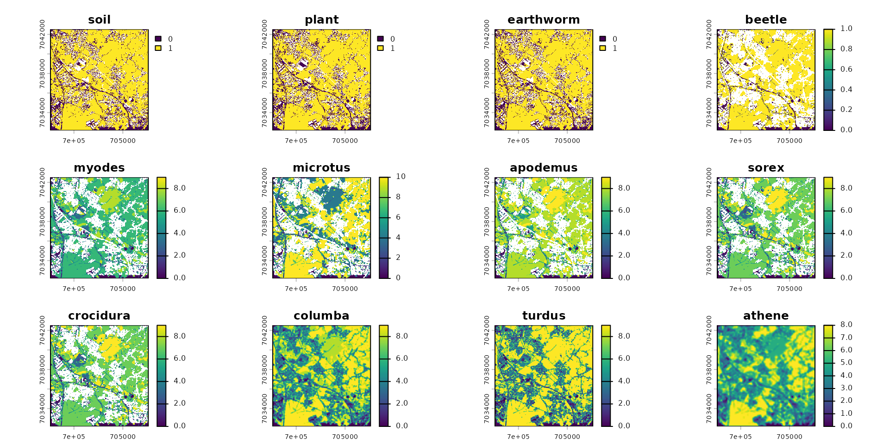
That we can normalized:
species_to_scale <- c("myodes", "microtus", "apodemus", "sorex", "crocidura",
"columba", "turdus", "athene")
spcmdl_dispersal_init[[species_to_scale]] <- spcmdl_dispersal_init[[species_to_scale]] / 10
plot(spcmdl_dispersal_init)
# Application de la dispersion sur l'objet spacemodel (avec les flux calculés précédemment)
spcmdl_dispersal_flux <- spcmdl_berisp_flux |>
dispersal("beetle", method="convolution", method_option=list(kernel=k_beetle)) |>
dispersal("sorex", method="convolution", method_option=list(kernel=k_sorex)) |>
dispersal("crocidura", method="convolution", method_option=list(kernel=k_crocidura)) |>
dispersal("microtus", method="convolution", method_option=list(kernel=k_microtus)) |>
dispersal("myodes", method="convolution", method_option=list(kernel=k_myodes)) |>
dispersal("apodemus", method="convolution", method_option=list(kernel=k_apodemus)) |>
dispersal("turdus", method="convolution", method_option=list(kernel=k_turdus)) |>
dispersal("columba", method="convolution", method_option=list(kernel=k_columba)) |>
dispersal("athene", method="convolution", method_option=list(kernel=k_athene))
plot(spcmdl_dispersal_flux)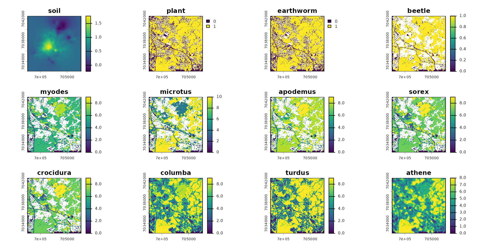
Transfer of food and contaminant
To extract both the exposure (ingested dose) and the impregnation (body burden) without running the model twice, we can use a simple mathematical trick. Because our trophic network must propagate the body burden from prey to predator, the spatial model calculates the final tissue concentrations by default. However, since the transfer equation for all our animals is strictly linear—where Body Burden = Exposure × BTF—we can easily retrieve the initial exposure post-simulation using the inverse operation: Exposure = Body Burden / BTF. Here is how to implement this cleanly in R to extract both metrics from your final spatial model:
Compute impregnation
# Calculate the final exposure/body burden for all species in the food web
spcmdl_impregnation <- transfer(
spcmdl_dispersal_flux,
fluxes,
exposure_weighting = "potential"
)
plot(spcmdl_impregnation)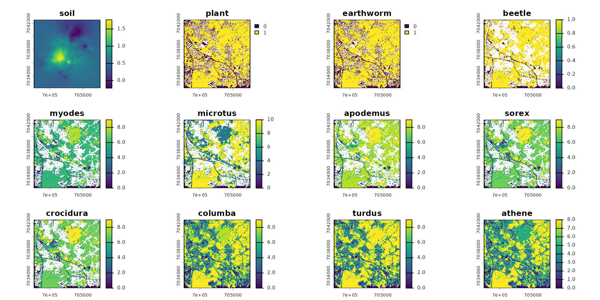
Extract exposure
# Extraire TOUTES les couches du SpatRaster dans un seul data.frame
df_all <- as.data.frame(spcmdl_impregnation, na.rm = TRUE)
# Transformer le tableau "large" (1 colonne = 1 espèce)
# en format "long" (1 ligne = 1 observation d'une espèce)
df_long <- pivot_longer(
df_all,
cols = everything(),
names_to = "species",
values_to = "concentration"
)
# Créer le graphique de densité globale
ggplot(df_long, aes(x = concentration, fill = species, color = species)) +
geom_density(alpha = 0.4) +
scale_fill_manual(values = species_colors) +
scale_color_manual(values = species_colors) +
theme_minimal(base_size = 14) +
scale_x_sqrt() +
labs(
title = "Distribution of Body-burden",
x = "Body-burden",
y = "Density",
fill = "Species",
color = "Species"
) +
theme(
legend.position = "right"
)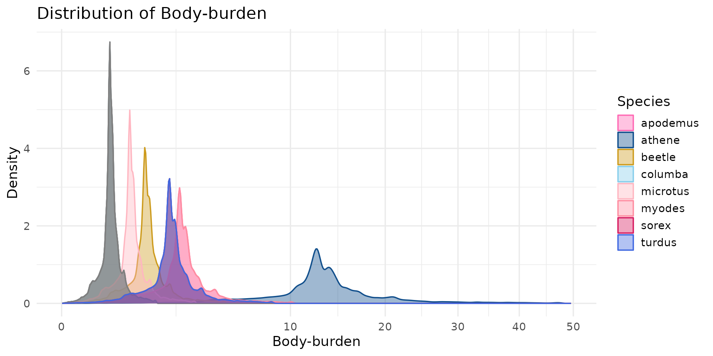
Extraction of exposure
BTF_values <- c(
beetle = BTF_beetle,
myodes = BTF_mammal,
microtus = BTF_mammal,
apodemus = BTF_mammal,
sorex = BTF_mammal,
crocidura = BTF_mammal,
columba = BTF_bird,
turdus = BTF_bird,
athene = BTF_bird
)
species_names <- names(BTF_values)
rast_impregnation <- spcmdl_impregnation[species_names]
rast_exposure <- rast_impregnation / BTF_values
# On crée une copie exacte du spacemodel d'imprégnation
spcmdl_exposure <- spcmdl_impregnation
spcmdl_exposure[[species_names]] <- spcmdl_exposure[[species_names]] / BTF_values
plot(spcmdl_exposure)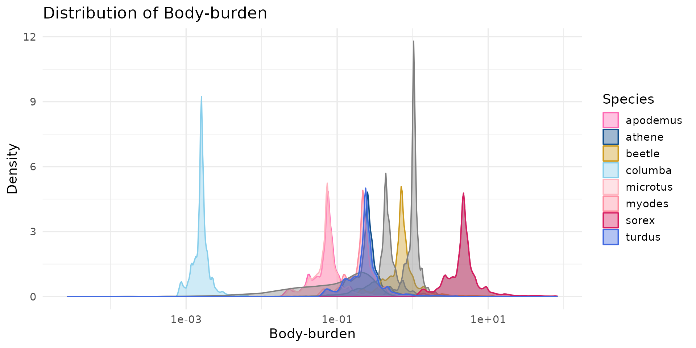
Compared to data
data("earthworm_cd")
ggplot() +
theme_minimal() +
geom_point(data=earthworm_cd, aes(x=log10_cd_soil, y=log10_cd_worm)) +
geom_point(data=df_all, aes(x=soil, y=earthworm), col="red")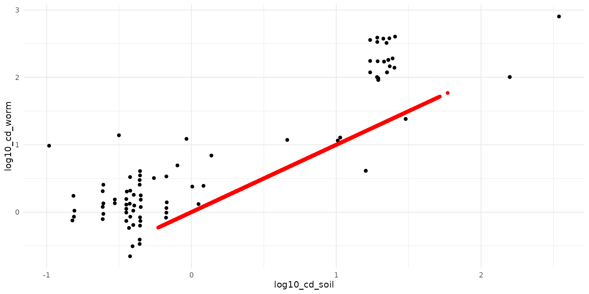
data("sf_micromammals")
df_all_longer <- df_all %>%
dplyr::select(soil, myodes, microtus, apodemus, sorex, crocidura) %>%
tidyr::pivot_longer(
cols = c("myodes", "microtus", "apodemus", "sorex", "crocidura"),
names_to = "genus",
values_to = "concentration"
)
ggplot() +
theme_minimal() +
scale_x_log10() +
scale_y_log10(limits=c(1e-3,NA)) +
geom_point(data=sf_micromammals, aes(x=cd_S, y=cd_WB_FW, color=genus)) +
geom_line(data=df_all_longer, aes(x=10^soil, y=concentration, color=genus)) +
facet_grid(~genus)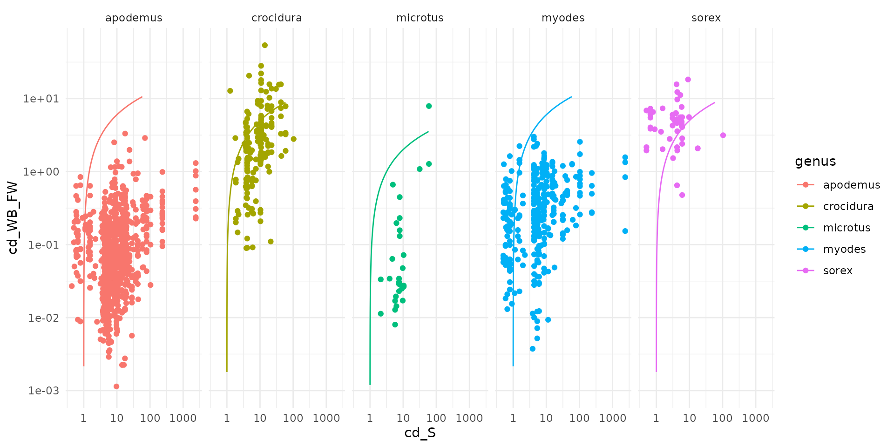
Risk based on SSD
Define threshold
data("SSD_ecoSSL_all")plants
ssd_cd_plant <- SSD_ecoSSL_all |>
dplyr::filter(
compound == "Cadmium",
species_group == "Plant",
!is.na(tox_value)
)
# Create the plot
ggplot(data = ssd_cd_plant, aes(x = order_tox_value, y = tox_value, color = ERE_full)) +
theme_minimal(base_size = 14) +
# geom_hline(yintercept = 32, linetype = "dashed", color = "red", linewidth = 1) +
geom_point(size = 2.5, alpha = 0.8) +
facet_wrap(~ ERE_full, scales = "free_x") +
scale_y_log10(labels = label_number()) +
scale_color_viridis_d(option = "plasma", guide = "none") +
labs(
title = "Plant Sensitivity to Cadmium (Soil)",
subtitle = "Distribution of toxicity values by effect type (ERE)",
x = "Order of Toxicity",
y = "Soil concentration (mg/kg dry weight)"
) +
theme(
panel.grid.minor = element_blank(),
strip.text = element_text(face = "bold", size = 10)
)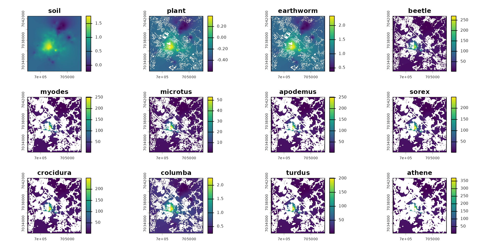
Invertebrates
ssd_cd_invert <- SSD_ecoSSL_all |>
dplyr::filter(
compound == "Cadmium",
grepl("Invert", species_group), # Flexible filter for Invertebrates
!is.na(tox_value)
)
ggplot(data = ssd_cd_invert, aes(x = order_tox_value, y = tox_value, color = ERE_full)) +
theme_minimal(base_size = 14) +
geom_point(size = 2.5, alpha = 0.8) +
facet_wrap(~ ERE_full, scales = "free_x", ncol=4) +
scale_y_log10(labels = label_number()) +
scale_color_viridis_d(option = "viridis", guide = "none") +
labs(
title = "Invertebrate Sensitivity to Cadmium (Soil)",
subtitle = "Distribution of toxicity values by effect type (ERE)",
x = "Order of Toxicity",
y = "Soil concentration (mg/kg dry weight)"
) +
theme(panel.grid.minor = element_blank(), strip.text = element_text(face = "bold"))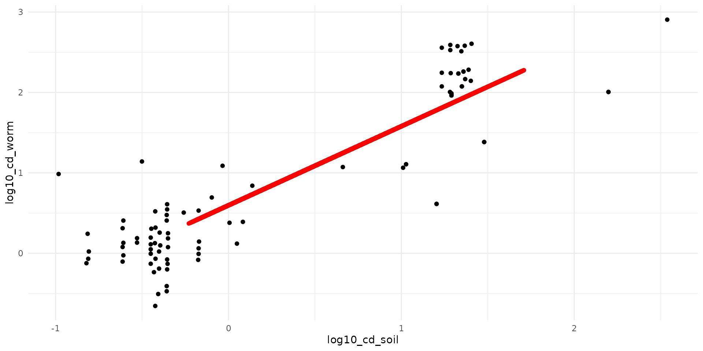
Mammals
ssd_cd_mammal <- SSD_ecoSSL_all |>
dplyr::filter(
compound == "Cadmium",
grepl("Mammal", species_group),
!is.na(tox_value)
)
ggplot(data = ssd_cd_mammal, aes(x = order_tox_value, y = tox_value, color = ERE_full)) +
theme_minimal(base_size = 14) +
# geom_hline(yintercept = 0.77, linetype = "dashed", color = "red", linewidth = 1) +
geom_point(size = 2.5, alpha = 0.8) +
facet_wrap(~ ERE_full, scales = "free_x") +
scale_y_log10(labels = label_number()) +
scale_color_viridis_d(option = "magma", guide = "none") +
labs(
title = "Mammal Sensitivity to Cadmium",
subtitle = "Distribution of toxicity values (Daily Dose) by effect type",
x = "Order of Toxicity",
y = "Daily dose (mg/kg body weight / day)"
) +
theme(panel.grid.minor = element_blank(), strip.text = element_text(face = "bold"))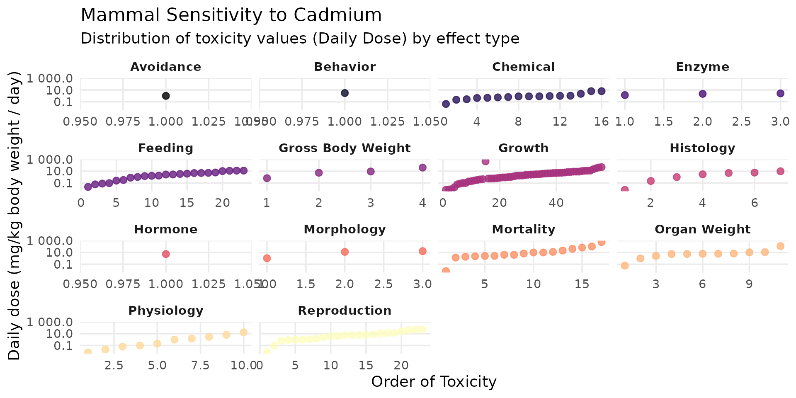
Birds
ssd_cd_avian <- SSD_ecoSSL_all |>
dplyr::filter(
compound == "Cadmium",
grepl("Avian", species_group),
!is.na(tox_value)
)
ggplot(data = ssd_cd_avian, aes(x = order_tox_value, y = tox_value, color = ERE_full)) +
theme_minimal(base_size = 14) +
# geom_hline(yintercept = 1.47, linetype = "dashed", color = "red", linewidth = 1) +
geom_point(size = 2.5, alpha = 0.8) +
facet_wrap(~ ERE_full, scales = "free_x") +
scale_y_log10(labels = label_number()) +
scale_color_viridis_d(option = "cividis", guide = "none") +
labs(
title = "Bird Sensitivity (Avian) to Cadmium",
subtitle = "Distribution of toxicity values (Daily Dose) by effect type",
x = "Order of Toxicity",
y = "Daily dose (mg/kg body weight / day)"
) +
theme(panel.grid.minor = element_blank(), strip.text = element_text(face = "bold"))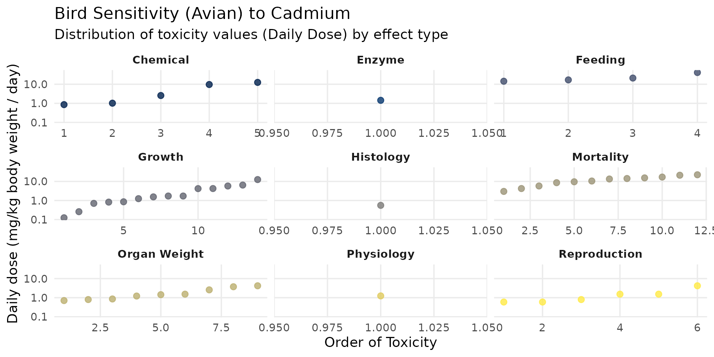
Risk Maps
Mortality
probs=0.5
plant_mortality = ssd_cd_plant[ssd_cd_plant$ERE_full=="Growth",]
plant_mortality_thrshld = quantile(plant_mortality$tox_value, probs=probs, na.rm=TRUE) |>
as.numeric()
invert_mortality = ssd_cd_invert[ssd_cd_invert$ERE_full=="Mortality",]
invert_mortality_thrshld = quantile(invert_mortality$tox_value, probs=0.1, na.rm=TRUE)|>
as.numeric()
mammal_mortality = ssd_cd_mammal[ssd_cd_mammal$ERE_full=="Mortality",]
mammal_mortality_thrshld = quantile(mammal_mortality$tox_value, probs=probs, na.rm=TRUE)|>
as.numeric()
bird_mortality = ssd_cd_avian[ssd_cd_avian$ERE_full=="Mortality",]
bird_mortality_thrshld = quantile(bird_mortality$tox_value, probs=probs, na.rm=TRUE)|>
as.numeric()
# Reference thresholds for each component
# Reference thresholds for each component (Toutes les espèces incluses)
thresholds <- c(
soil = 1,
plant = plant_mortality_thrshld,
earthworm = invert_mortality_thrshld,
beetle = invert_mortality_thrshld,
myodes = mammal_mortality_thrshld,
microtus = mammal_mortality_thrshld,
apodemus = mammal_mortality_thrshld,
sorex = mammal_mortality_thrshld,
crocidura = mammal_mortality_thrshld,
columba = bird_mortality_thrshld,
turdus = bird_mortality_thrshld,
athene = bird_mortality_thrshld
)
# Align the vector's order with the raster layers' order (very important!)
ordered_thresholds <- thresholds[names(spcmdl_exposure)]
# Calculate the risk index: Concentration / Threshold
spcmdl_risk <- spcmdl_exposure / ordered_thresholds
# Re-attach the trophic metadata since the division created a new object
spcmdl_risk <- spacemodel(spcmdl_risk, attr(spcmdl_exposure, "trophic_tbl"))
# Risk colors
breaks_risk <- c(-Inf, 0.1, 0.5, 1, 5, 10, Inf)
cols_risk <- c(
"darkgreen", # 0 - 0.1
"green", # 0.1 - 0.5
"lightgreen", # 0.5 - 1
"yellow", # 1 - 5
"saddlebrown", # 5 - 10
"#4A2C2A" # > 10
)
names_keep <- names(spcmdl_risk)[names(spcmdl_risk) != "soil"]
spcmdl_risk_sub <- spcmdl_risk[[names_keep]]
terra::plot(spcmdl_risk_sub,
breaks = breaks_risk,
col = cols_risk)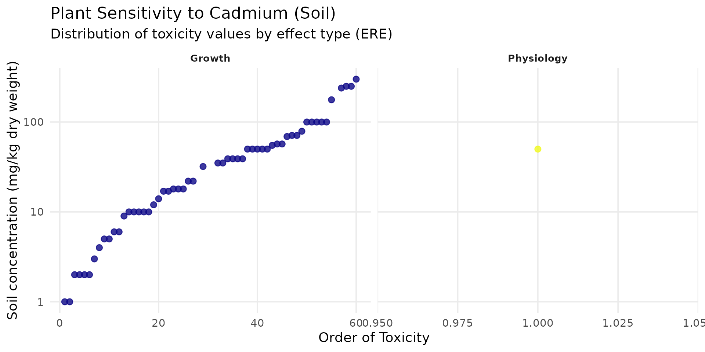